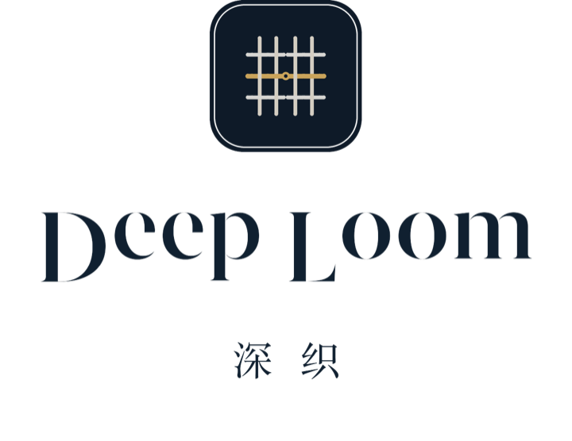
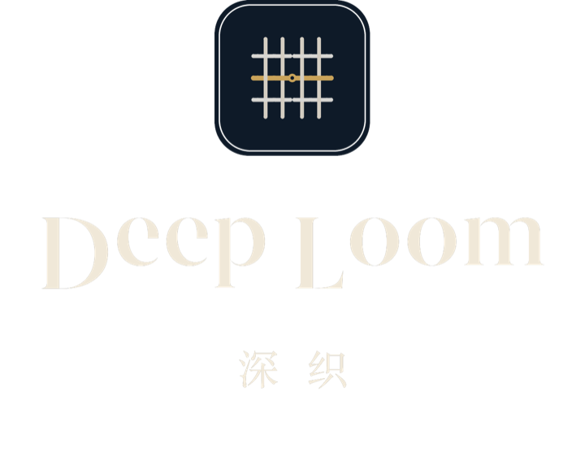

校徽与院标沿用原版展示版式。


面向学术工作的本地协作框架，从确认任务和依据，到模块交付和归档。
任务如何流转
明确任务
确认目标、材料和交付目录
检索材料
用查询卡记录范围和来源
模块执行
按选定技能处理材料
确认与归档
核对交付，再登记条目和关系
操作者选择主模块并确认交接。工作区的数据由部署者在本地创建，模块图记录流程和读写边界。
快速开始
建立本地工作区
复制空白项目和查询卡模板，填入本轮目标、允许使用的材料和交付位置。
选择主模块
按任务信号选择技能，开工时核实材料出处，把工作文件放在自己的项目目录。
核对与归档
确认采用的材料、交付版本和待登记关系。需要用量记录或文本抽取时，在本地运行核心脚本。
七类通用学术流程
目录与运行边界
core/- 核心流程、模块图、字段模板和 Python 工具
modules/- 七项技能及其模块声明
templates/- 部署者自行填写的空白配置
四个核心 Python 工具用于文本抽取、项目时间计算、写入用量和查看用量。使用 Python 3.10 或更新版本。DOCX 抽取使用标准库，PDF 和旧 DOC 需要相应的本地转换程序。
检索、归档和模块交接由操作者执行。论文精读、教材、申报、案例和引文审查提供人工流程说明。原专用生成器、原看板、自动检索、自动归档与项目总表同步均未随框架提供。
日常工作在本地主本进行。独立公开副本仅用于发布和展示框架设计，导出区用于发布准备和留存过程记录。 维护说明
RayonLee 有权许可的公开框架代码和通用文档采用 MIT 许可证。第三方校徽、品牌标识及素材不在 MIT 许可范围内，原有权利、许可和署名均予保留。中国人民大学及其信息学院标识仅供展示。 MIT 许可证 · 中国人民大学校徽来源 · 信息学院标识来源